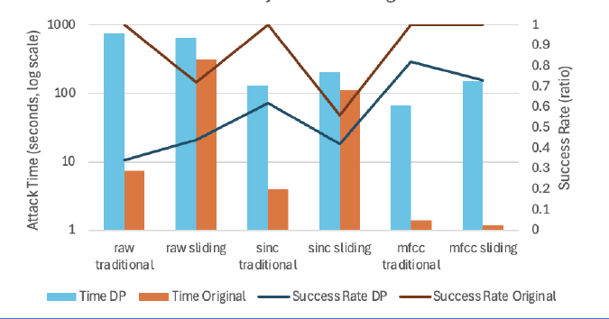
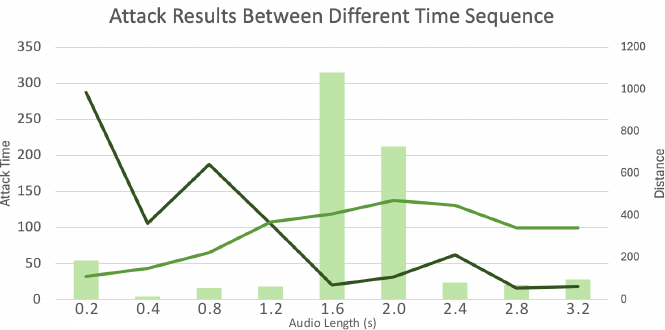

Inversion attacks and defenses on speaker classification models
How model architecture shapes vulnerability to voice-trait extraction — and when differential privacy actually protects.
The problem
A model inversion attack uses gradient signals through a trained speaker classifier to generate audio the system recognizes as a target speaker — exposing timbre, accent, and rhythm that can seed convincing voice deepfakes. Defenses exist, but nobody had systematically measured how the choice of front-end architecture changes the attack surface. That's what we set out to quantify.
Method
We trained speaker classifiers over three input pipelines — raw waveform, SincNet, and MFCC — on three public datasets (a 50-speaker Kaggle corpus, UrbanSound8K, and TIMIT with 463 speakers), then attacked each with two algorithms: a traditional attack that updates the whole sample every step, and a sliding attack that perturbs one small time window at a time. A differential-privacy output layer served as the defense under test, and attacks were scored by time-to-success, success rate, and distance from real audio.

Findings
- Architecture matters most. MFCC front-ends are the most vulnerable; end-to-end raw-waveform models are the hardest to invert, with SincNet in between. Feature size tells the story: inverting 350 MFCC values is far easier than 245,760 raw samples.
- Input length is a defense knob. Attack cost peaks for 1.6–2.0s clips; sliding attacks win on short audio, traditional attacks on long audio.
- DP is not a cure-all. DP-SGD roughly halves attack success on raw/SincNet models but does little for MFCC — pairing DP with a weak architecture buys false comfort.
- Deeper models resist better. Added capacity raises attack time and drives sliding-attack success rates down fastest.


Debugging story
Midway, a GAN-based attack stalled: slow convergence and oscillating loss. Instead of tuning blindly, we split into two parallel tracks — a diagnosis track (loss-sensitivity analysis, objective re-weighting, overfitting checks across validation splits) and a simplification track that recast the attack as constrained optimization with direct gradient refinement on the input. The simpler formulation proved more stable and interpretable, and became the final method. That two-track habit — diagnose in place while testing a cheaper formulation — is the most transferable thing this project taught me.